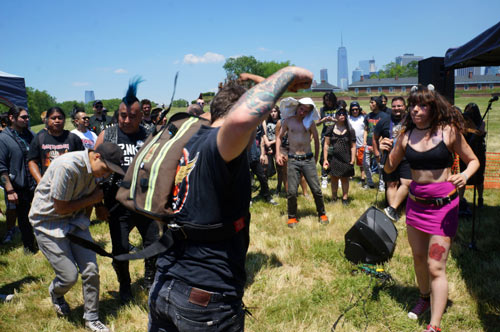
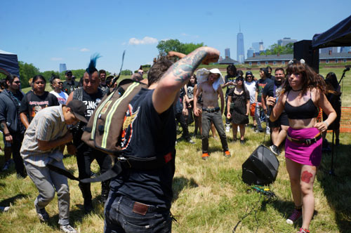
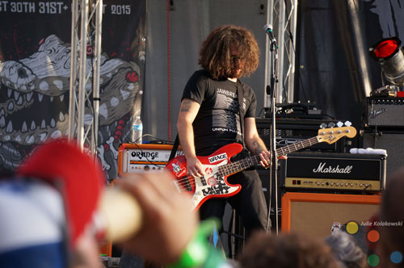
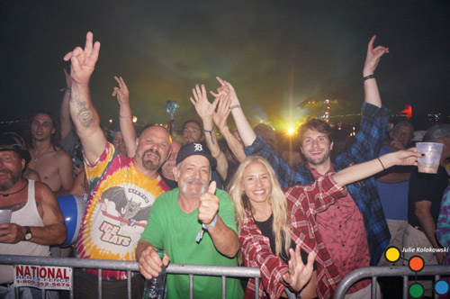
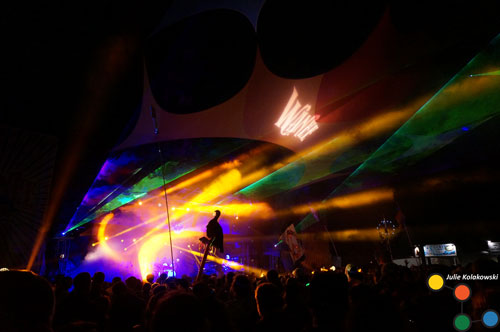

Ratas En Zelo at Punk Island on June 19, 2016 on Governor's Island, NY.
Punk Island is an annual DIY music festival that is free and open to all ages. Around 100 bands play every year from all over the Northeast US and Canada.

Punk Island is an annual DIY music festival that is free and open to all ages. Around 100 bands play every year from all over the Northeast US and Canada.

Fest is an annual 3-day music festival in Northern Florida. More than 300 bands play every year in venues like hotel pool decks, bars, pubs, and the stage at Bo Diddley Plaza.

Wanee Festival is an annual roots, jam, rock, and funk festival in the forest of Northern Florida at the Spirit of the Suwannee Music Park. Fest-goers all camp out and hang hammocks from the magical live oak trees of the venue.

Night time turns the Spirit of the Suwannnee Music Park into a world of color with the laser light shows alongside the performers.
